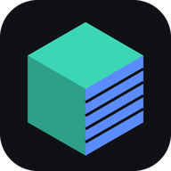

Scan2Print
Open a scan from Scaniverse, Polycam, KIRI… (OBJ, GLB/GLTF, PLY, STL or a .zip) and make it print-ready.

Scan2PrintOpen a scan from Scaniverse, Polycam, KIRI… (OBJ, GLB/GLTF, PLY, STL or a .zip) and make it print-ready.
Auto: GLB/GLTF are metres; tiny models (< 3 units) are treated as metres; everything else as mm. Changing this re-scales the current model.
Formats: OBJ, GLB, GLTF (+.bin, select all files), PLY (mesh), STL, or a .zip containing one of those. Textures/colours are ignored — printing only needs the shape. Files never leave your phone.
Removes a thin slice from the lowest point and caps it — gives a flat, sticky first layer.
STL and 3MF are written in millimetres, Z-up, ready for any slicer (Bambu Studio, PrusaSlicer, Cura, Orca). On iPhone use “Share / Save to Files” then pick “Save to Files” or your slicer app.
One finger: orbit · Two fingers: pinch to zoom, drag to pan · Double-tap: reset view. Red-tinted surfaces are the inside of the mesh (holes or flipped faces).